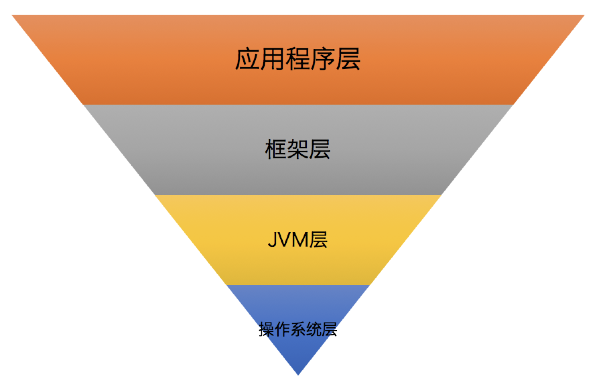
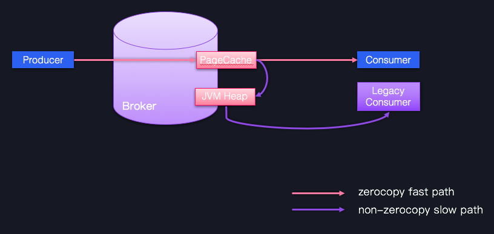
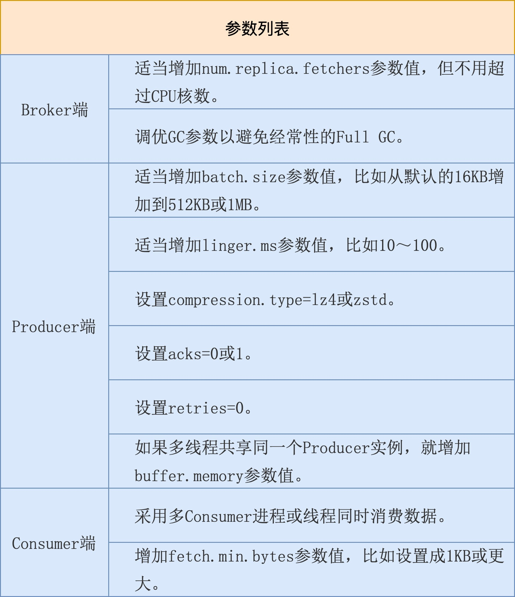
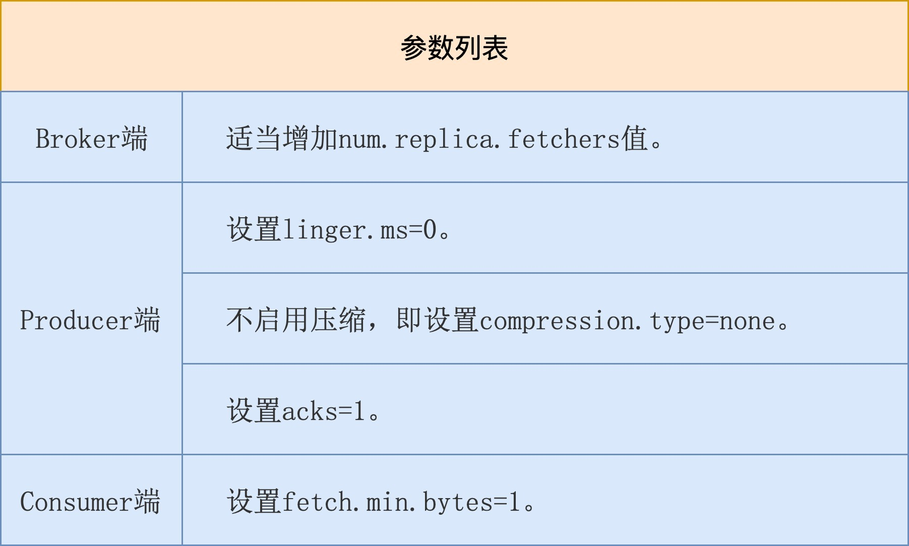
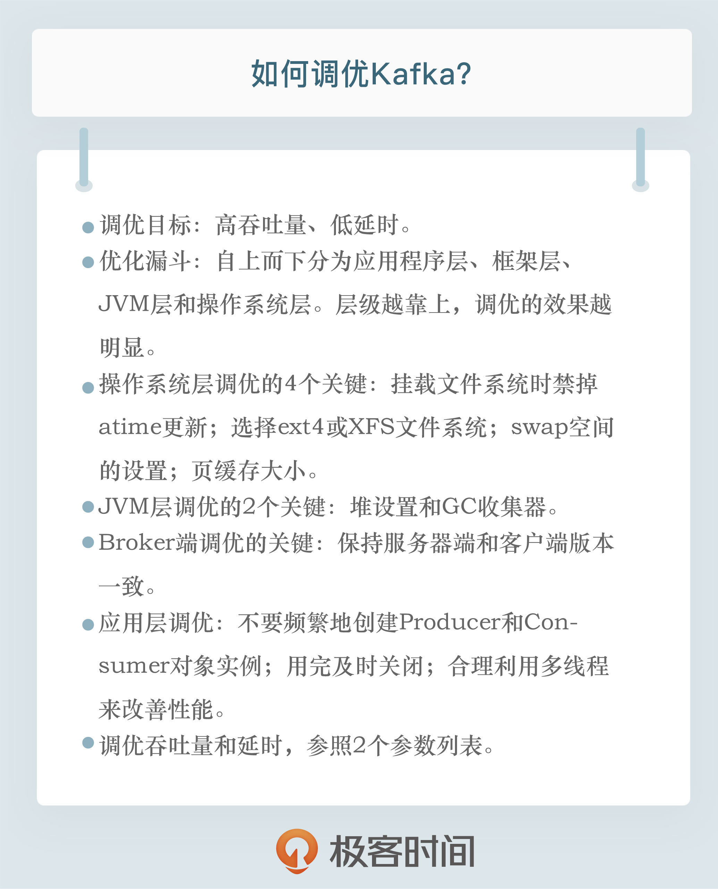

- 00 开篇词 为什么要学习Kafka？.md.html
- 01 消息引擎系统ABC.md.html
- 02 一篇文章带你快速搞定Kafka术语.md.html
- 03 Kafka只是消息引擎系统吗？.md.html
- 04 我应该选择哪种Kafka？.md.html
- 05 聊聊Kafka的版本号.md.html
- 06 Kafka线上集群部署方案怎么做？.md.html
- 07 最最最重要的集群参数配置（上）.md.html
- 08 最最最重要的集群参数配置（下）.md.html
- 09 生产者消息分区机制原理剖析.md.html
- 10 生产者压缩算法面面观.md.html
- 11 无消息丢失配置怎么实现？.md.html
- 12 客户端都有哪些不常见但是很高级的功能？.md.html
- 13 Java生产者是如何管理TCP连接的？.md.html
- 14 幂等生产者和事务生产者是一回事吗？.md.html
- 15 消费者组到底是什么？.md.html
- 16 揭开神秘的“位移主题”面纱.md.html
- 17 消费者组重平衡能避免吗？.md.html
- 18 Kafka中位移提交那些事儿.md.html
- 19 CommitFailedException异常怎么处理？.md.html
- 20 多线程开发消费者实例.md.html
- 21 Java 消费者是如何管理TCP连接的_.md.html
- 22 消费者组消费进度监控都怎么实现？.md.html
- 23 Kafka副本机制详解.md.html
- 24 请求是怎么被处理的？.md.html
- 25 消费者组重平衡全流程解析.md.html
- 26 你一定不能错过的Kafka控制器.md.html
- 27 关于高水位和Leader Epoch的讨论.md.html
- 28 主题管理知多少_.md.html
- 29 Kafka动态配置了解下？.md.html
- 30 怎么重设消费者组位移？.md.html
- 31 常见工具脚本大汇总.md.html
- 32 KafkaAdminClient：Kafka的运维利器.md.html
- 33 Kafka认证机制用哪家？.md.html
- 34 云环境下的授权该怎么做？.md.html
- 35 跨集群备份解决方案MirrorMaker.md.html
- 36 你应该怎么监控Kafka？.md.html
- 37 主流的Kafka监控框架.md.html
- 38 调优Kafka，你做到了吗？.md.html
- 39 从0搭建基于Kafka的企业级实时日志流处理平台.md.html
- 40 Kafka Streams与其他流处理平台的差异在哪里？.md.html
- 41 Kafka Streams DSL开发实例.md.html
- 42 Kafka Streams在金融领域的应用.md.html
- 加餐 搭建开发环境、阅读源码方法、经典学习资料大揭秘.md.html
- 用户故事 黄云：行百里者半九十.md.html
- 结束语 以梦为马，莫负韶华！.md.html
- 捐赠
38 调优Kafka，你做到了吗？
你好，我是胡夕。今天我要和你分享的主题是：如何调优Kafka。
调优目标
在做调优之前，我们必须明确优化Kafka的目标是什么。通常来说，调优是为了满足系统常见的非功能性需求。在众多的非功能性需求中，性能绝对是我们最关心的那一个。不同的系统对性能有不同的诉求，比如对于数据库用户而言，性能意味着请求的响应时间，用户总是希望查询或更新请求能够被更快地处理完并返回。
对Kafka而言，性能一般是指吞吐量和延时。
吞吐量，也就是TPS，是指Broker端进程或Client端应用程序每秒能处理的字节数或消息数，这个值自然是越大越好。
延时和我们刚才说的响应时间类似，它表示从Producer端发送消息到Broker端持久化完成之间的时间间隔。这个指标也可以代表端到端的延时（End-to-End，E2E），也就是从Producer发送消息到Consumer成功消费该消息的总时长。和TPS相反，我们通常希望延时越短越好。
总之，高吞吐量、低延时是我们调优Kafka集群的主要目标，一会儿我们会详细讨论如何达成这些目标。在此之前，我想先谈一谈优化漏斗的问题。
优化漏斗
优化漏斗是一个调优过程中的分层漏斗，我们可以在每一层上执行相应的优化调整。总体来说，层级越靠上，其调优的效果越明显，整体优化效果是自上而下衰减的，如下图所示：

第1层：应用程序层。它是指优化Kafka客户端应用程序代码。比如，使用合理的数据结构、缓存计算开销大的运算结果，抑或是复用构造成本高的对象实例等。这一层的优化效果最为明显，通常也是比较简单的。
第2层：框架层。它指的是合理设置Kafka集群的各种参数。毕竟，直接修改Kafka源码进行调优并不容易，但根据实际场景恰当地配置关键参数的值，还是很容易实现的。
第3层：JVM层。Kafka Broker进程是普通的JVM进程，各种对JVM的优化在这里也是适用的。优化这一层的效果虽然比不上前两层，但有时也能带来巨大的改善效果。
第4层：操作系统层。对操作系统层的优化很重要，但效果往往不如想象得那么好。与应用程序层的优化效果相比，它是有很大差距的。
基础性调优
接下来，我就来分别介绍一下优化漏斗的4个分层的调优。
操作系统调优
我先来说说操作系统层的调优。在操作系统层面，你最好在挂载（Mount）文件系统时禁掉atime更新。atime的全称是access time，记录的是文件最后被访问的时间。记录atime需要操作系统访问inode资源，而禁掉atime可以避免inode访问时间的写入操作，减少文件系统的写操作数。你可以执行mount -o noatime命令进行设置。
至于文件系统，我建议你至少选择ext4或XFS。尤其是XFS文件系统，它具有高性能、高伸缩性等特点，特别适用于生产服务器。值得一提的是，在去年10月份的Kafka旧金山峰会上，有人分享了ZFS搭配Kafka的案例，我们在专栏第8讲提到过与之相关的数据报告。该报告宣称ZFS多级缓存的机制能够帮助Kafka改善I/O性能，据说取得了不错的效果。如果你的环境中安装了ZFS文件系统，你可以尝试将Kafka搭建在ZFS文件系统上。
另外就是swap空间的设置。我个人建议将swappiness设置成一个很小的值，比如1～10之间，以防止Linux的OOM Killer开启随意杀掉进程。你可以执行sudo sysctl vm.swappiness=N来临时设置该值，如果要永久生效，可以修改/etc/sysctl.conf文件，增加vm.swappiness=N，然后重启机器即可。
操作系统层面还有两个参数也很重要，它们分别是ulimit -n和vm.max_map_count。前者如果设置得太小，你会碰到Too Many File Open这类的错误，而后者的值如果太小，在一个主题数超多的Broker机器上，你会碰到OutOfMemoryError：Map failed的严重错误，因此，我建议在生产环境中适当调大此值，比如将其设置为655360。具体设置方法是修改/etc/sysctl.conf文件，增加vm.max_map_count=655360，保存之后，执行sysctl -p命令使它生效。
最后，不得不提的就是操作系统页缓存大小了，这对Kafka而言至关重要。在某种程度上，我们可以这样说：给Kafka预留的页缓存越大越好，最小值至少要容纳一个日志段的大小，也就是Broker端参数log.segment.bytes的值。该参数的默认值是1GB。预留出一个日志段大小，至少能保证Kafka可以将整个日志段全部放入页缓存，这样，消费者程序在消费时能直接命中页缓存，从而避免昂贵的物理磁盘I/O操作。
JVM层调优
说完了操作系统层面的调优，我们来讨论下JVM层的调优，其实，JVM层的调优，我们还是要重点关注堆设置以及GC方面的性能。
1.设置堆大小。
如何为Broker设置堆大小，这是很多人都感到困惑的问题。我来给出一个朴素的答案：将你的JVM堆大小设置成6～8GB。
在很多公司的实际环境中，这个大小已经被证明是非常合适的，你可以安心使用。如果你想精确调整的话，我建议你可以查看GC log，特别是关注Full GC之后堆上存活对象的总大小，然后把堆大小设置为该值的1.5～2倍。如果你发现Full GC没有被执行过，手动运行jmap -histo:live < pid >就能人为触发Full GC。
2.GC收集器的选择。
我强烈建议你使用G1收集器，主要原因是方便省事，至少比CMS收集器的优化难度小得多。另外，你一定要尽力避免Full GC的出现。其实，不论使用哪种收集器，都要竭力避免Full GC。在G1中，Full GC是单线程运行的，它真的非常慢。如果你的Kafka环境中经常出现Full GC，你可以配置JVM参数-XX:+PrintAdaptiveSizePolicy，来探查一下到底是谁导致的Full GC。
使用G1还很容易碰到的一个问题，就是大对象（Large Object），反映在GC上的错误，就是“too many humongous allocations”。所谓的大对象，一般是指至少占用半个区域（Region）大小的对象。举个例子，如果你的区域尺寸是2MB，那么超过1MB大小的对象就被视为是大对象。要解决这个问题，除了增加堆大小之外，你还可以适当地增加区域大小，设置方法是增加JVM启动参数-XX:+G1HeapRegionSize=N。默认情况下，如果一个对象超过了N/2，就会被视为大对象，从而直接被分配在大对象区。如果你的Kafka环境中的消息体都特别大，就很容易出现这种大对象分配的问题。
Broker端调优
我们继续沿着漏斗往上走，来看看Broker端的调优。
Broker端调优很重要的一个方面，就是合理地设置Broker端参数值，以匹配你的生产环境。不过，后面我们在讨论具体的调优目标时再详细说这部分内容。这里我想先讨论另一个优化手段，即尽力保持客户端版本和Broker端版本一致。不要小看版本间的不一致问题，它会令Kafka丧失很多性能收益，比如Zero Copy。下面我用一张图来说明一下。

图中蓝色的Producer、Consumer和Broker的版本是相同的，它们之间的通信可以享受Zero Copy的快速通道；相反，一个低版本的Consumer程序想要与Producer、Broker交互的话，就只能依靠JVM堆中转一下，丢掉了快捷通道，就只能走慢速通道了。因此，在优化Broker这一层时，你只要保持服务器端和客户端版本的一致，就能获得很多性能收益了。
应用层调优
现在，我们终于来到了漏斗的最顶层。其实，这一层的优化方法各异，毕竟每个应用程序都是不一样的。不过，有一些公共的法则依然是值得我们遵守的。
- 不要频繁地创建Producer和Consumer对象实例。构造这些对象的开销很大，尽量复用它们。
- 用完及时关闭。这些对象底层会创建很多物理资源，如Socket连接、ByteBuffer缓冲区等。不及时关闭的话，势必造成资源泄露。
- 合理利用多线程来改善性能。Kafka的Java Producer是线程安全的，你可以放心地在多个线程中共享同一个实例；而Java Consumer虽不是线程安全的，但我们在专栏第20讲讨论过多线程的方案，你可以回去复习一下。
性能指标调优
接下来，我会给出调优各个目标的参数配置以及具体的配置原因，希望它们能够帮助你更有针对性地调整你的Kafka集群。
调优吞吐量
首先是调优吞吐量。很多人对吞吐量和延时之间的关系似乎有些误解。比如有这样一种提法还挺流行的：假设Kafka每发送一条消息需要花费2ms，那么延时就是2ms。显然，吞吐量就应该是500条/秒，因为1秒可以发送1 / 0.002 = 500条消息。因此，吞吐量和延时的关系可以用公式来表示：TPS = 1000 / Latency(ms)。但实际上，吞吐量和延时的关系远不是这么简单。
我们以Kafka Producer为例。假设它以2ms的延时来发送消息，如果每次只是发送一条消息，那么TPS自然就是500条/秒。但如果Producer不是每次发送一条消息，而是在发送前等待一段时间，然后统一发送一批消息，比如Producer每次发送前先等待8ms，8ms之后，Producer共缓存了1000条消息，此时总延时就累加到10ms（即 2ms + 8ms）了，而TPS等于1000 / 0.01 = 100,000条/秒。由此可见，虽然延时增加了4倍，但TPS却增加了将近200倍。这其实也是批次化（batching）或微批次化（micro-batching）目前会很流行的原因。
在实际环境中，用户似乎总是愿意用较小的延时增加的代价，去换取TPS的显著提升。毕竟，从2ms到10ms的延时增加通常是可以忍受的。事实上，Kafka Producer就是采取了这样的设计思想。
当然，你可能会问：发送一条消息需要2ms，那么等待8ms就能累积1000条消息吗？答案是可以的！Producer累积消息时，一般仅仅是将消息发送到内存中的缓冲区，而发送消息却需要涉及网络I/O传输。内存操作和I/O操作的时间量级是不同的，前者通常是几百纳秒级别，而后者则是从毫秒到秒级别不等，因此，Producer等待8ms积攒出的消息数，可能远远多于同等时间内Producer能够发送的消息数。
好了，说了这么多，我们该怎么调优TPS呢？我来跟你分享一个参数列表。

我稍微解释一下表格中的内容。
Broker端参数num.replica.fetchers表示的是Follower副本用多少个线程来拉取消息，默认使用1个线程。如果你的Broker端CPU资源很充足，不妨适当调大该参数值，加快Follower副本的同步速度。因为在实际生产环境中，配置了acks=all的Producer程序吞吐量被拖累的首要因素，就是副本同步性能。增加这个值后，你通常可以看到Producer端程序的吞吐量增加。
另外需要注意的，就是避免经常性的Full GC。目前不论是CMS收集器还是G1收集器，其Full GC采用的是Stop The World的单线程收集策略，非常慢，因此一定要避免。
在Producer端，如果要改善吞吐量，通常的标配是增加消息批次的大小以及批次缓存时间，即batch.size和linger.ms。目前它们的默认值都偏小，特别是默认的16KB的消息批次大小一般都不适用于生产环境。假设你的消息体大小是1KB，默认一个消息批次也就大约16条消息，显然太小了。我们还是希望Producer能一次性发送更多的消息。
除了这两个，你最好把压缩算法也配置上，以减少网络I/O传输量，从而间接提升吞吐量。当前，和Kafka适配最好的两个压缩算法是LZ4和zstd，不妨一试。
同时，由于我们的优化目标是吞吐量，最好不要设置acks=all以及开启重试。前者引入的副本同步时间通常都是吞吐量的瓶颈，而后者在执行过程中也会拉低Producer应用的吞吐量。
最后，如果你在多个线程中共享一个Producer实例，就可能会碰到缓冲区不够用的情形。倘若频繁地遭遇TimeoutException：Failed to allocate memory within the configured max blocking time这样的异常，那么你就必须显式地增加buffer.memory参数值，确保缓冲区总是有空间可以申请的。
说完了Producer端，我们来说说Consumer端。Consumer端提升吞吐量的手段是有限的，你可以利用多线程方案增加整体吞吐量，也可以增加fetch.min.bytes参数值。默认是1字节，表示只要Kafka Broker端积攒了1字节的数据，就可以返回给Consumer端，这实在是太小了。我们还是让Broker端一次性多返回点数据吧。
调优延时
讲完了调优吞吐量，我们来说说如何优化延时，下面是调优延时的参数列表。

在Broker端，我们依然要增加num.replica.fetchers值以加快Follower副本的拉取速度，减少整个消息处理的延时。
在Producer端，我们希望消息尽快地被发送出去，因此不要有过多停留，所以必须设置linger.ms=0，同时不要启用压缩。因为压缩操作本身要消耗CPU时间，会增加消息发送的延时。另外，最好不要设置acks=all。我们刚刚在前面说过，Follower副本同步往往是降低Producer端吞吐量和增加延时的首要原因。
在Consumer端，我们保持fetch.min.bytes=1即可，也就是说，只要Broker端有能返回的数据，立即令其返回给Consumer，缩短Consumer消费延时。
小结
好了，我们来小结一下。今天，我跟你分享了Kafka调优方面的内容。我们先从调优目标开始说起，然后我给出了调优层次漏斗，接着我分享了一些基础性调优，包括操作系统层调优、JVM层调优以及应用程序调优等。最后，针对Kafka关心的两个性能指标吞吐量和延时，我分别从Broker、Producer和Consumer三个维度给出了一些参数值设置的最佳实践。
最后，我来分享一个性能调优的真实小案例。
曾经，我碰到过一个线上环境的问题：该集群上Consumer程序一直表现良好，但是某一天，它的性能突然下降，表现为吞吐量显著降低。我在查看磁盘读I/O使用率时，发现其明显上升，但之前该Consumer Lag很低，消息读取应该都能直接命中页缓存。此时磁盘读突然飙升，我就怀疑有其他程序写入了页缓存。后来经过排查，我发现果然有一个测试Console Consumer程序启动，“污染”了部分页缓存，导致主业务Consumer读取消息不得不走物理磁盘，因此吞吐量下降。找到了真实原因，解决起来就简单多了。
其实，我给出这个案例的真实目的是想说，对于性能调优，我们最好按照今天给出的步骤一步一步地窄化和定位问题。一旦定位了原因，后面的优化就水到渠成了。

开放讨论
请分享一个你调优Kafka的真实案例，详细说说你是怎么碰到性能问题的，又是怎么解决的。
欢迎写下你的思考和答案，我们一起讨论。如果你觉得有所收获，也欢迎把文章分享给你的朋友。
© 2019 - 2023 Liangliang Lee. Powered by gin and hexo-theme-book.